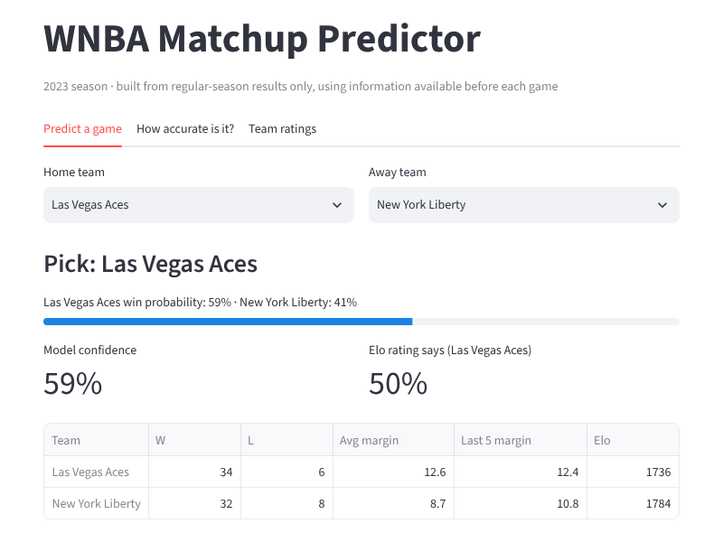

WNBA Game Outcome Prediction
Built a model to predict WNBA winners, then re-tested it: found a data leak, rebuilt it on pre-game data only, and compared it with simple baselines.
In 2023 I wanted to know whether team statistics could predict who wins a WNBA game. I used the full 2023 regular season, 240 games across 12 teams, and built a model to predict whether the home team would win. It scored about 70%, and I built a small web app around it.
Coming back to the project, I checked that number more carefully. It did not hold up, and figuring out why taught me more than the original model did.
The first model
I merged the game schedule with each team's advanced statistics, like offensive and defensive ratings, shooting efficiency and turnover rates. A feature selector narrowed about 46 statistics down to 10, and a logistic regression model learned which side of each game they favored. I tested it on 1,000 random train/test splits.
Finding the problem
The first test I should have run was a simple baseline. Just picking the team with the better final record was right 73% of the time, better than my model.
That pointed to the real issue. My statistics were end-of-season totals, including each team's total losses, and I was using them to predict games from that same season. The totals already contained the results I was trying to predict. In practice, nobody has those numbers before a game is played.
Rebuilding it fairly
I rebuilt every feature from earlier games only: each team's win percentage so far, average point margin, form over the last five games, days of rest, and an Elo rating that updates after every game. Then I tested walk-forward through the season. Each of the last 160 games was predicted by a model trained only on games played before it.
The honest answer is that this season was about two-thirds predictable. A two-feature model and a simple Elo rating tied at 69%, and adding more features made the model worse, not better. With only one season of data, simple was best.
The app
I rebuilt the web app in Streamlit on top of the new model. Pick a home and away team to get a win probability next to the Elo rating's view, see the walk-forward accuracy results, and browse every team's rating.

The Finals
The rebuilt model favored the Las Vegas Aces over the New York Liberty wherever the game was played. The Aces won the 2023 Finals 3–1, so it would have called 3 of the 4 games, missing only Game 3 in New York.
What I learned
Check for leakage before trusting a high score. Always compare against a simple baseline. Report a range, not a single number. Next, I would add earlier seasons and player availability, then test on 2024.
The first score was inflated by leaked data. The honest re-test lands at 69%, tied with a simple Elo rating, and the notebook shows every step.